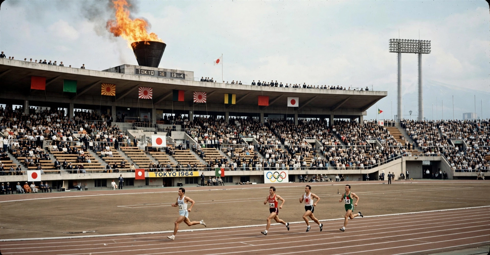

| Games of the XVIII Olympiad | |
|---|---|
 | |
| Host city | Tokyo, Japan |
| Dates | 10–24 October 1964 |
| Nations | 93 |
| Athletes | 5,151 |
| Events | 163 in 19 sports |
| Opened by | Emperor Hirohito |
The 1964 Summer Olympics, officially the Games of the XVIII Olympiad, were held from 10 to 24 October 1964 in Tokyo, Japan. Tokyo had originally been awarded the 1940 Games, which were cancelled because of the Second World War; the 1964 edition marked the first Olympic Games held in Asia and symbolized Japan's postwar recovery and re-emergence.
The Games introduced sweeping innovations: they were the first Olympics broadcast internationally by satellite, and organizers used early computer systems for results. Judo and women's volleyball made their Olympic debuts, both to Japanese delight. American swimmer Don Schollander won four gold medals; Soviet gymnast Larisa Latynina extended her career medal total to 18, a record for decades. Ethiopian Abebe Bikila became the first athlete to win the Olympic marathon twice, running in shoes after his barefoot victory in Rome. The final torchbearer, Yoshinori Sakai, had been born in Hiroshima on the day of the atomic bombing.
South Africa was barred over apartheid, beginning an exclusion that lasted until 1992. Indonesia and North Korea withdrew over disputes about the rival GANEFO games. The Games spurred transformative infrastructure in Tokyo, including the Shinkansen bullet train, launched nine days before the opening ceremony, expressways, and the distinctive Yoyogi National Gymnasium designed by Kenzo Tange. The medal table was led by the United States (36 golds) ahead of the Soviet Union (30) and Japan (16).